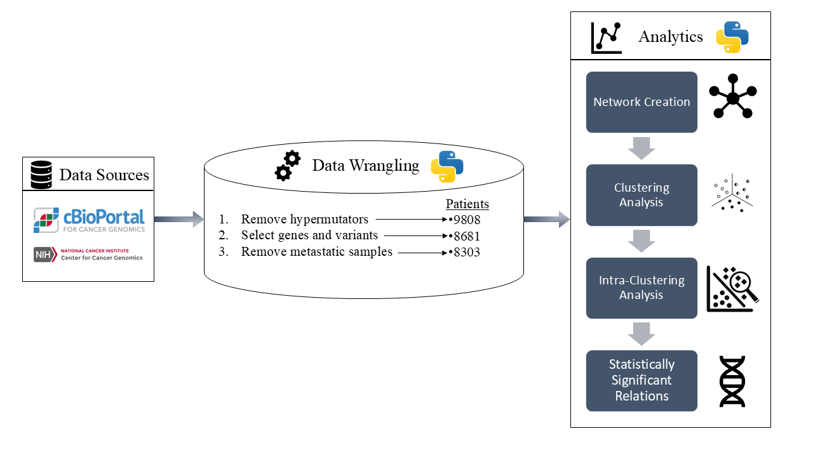
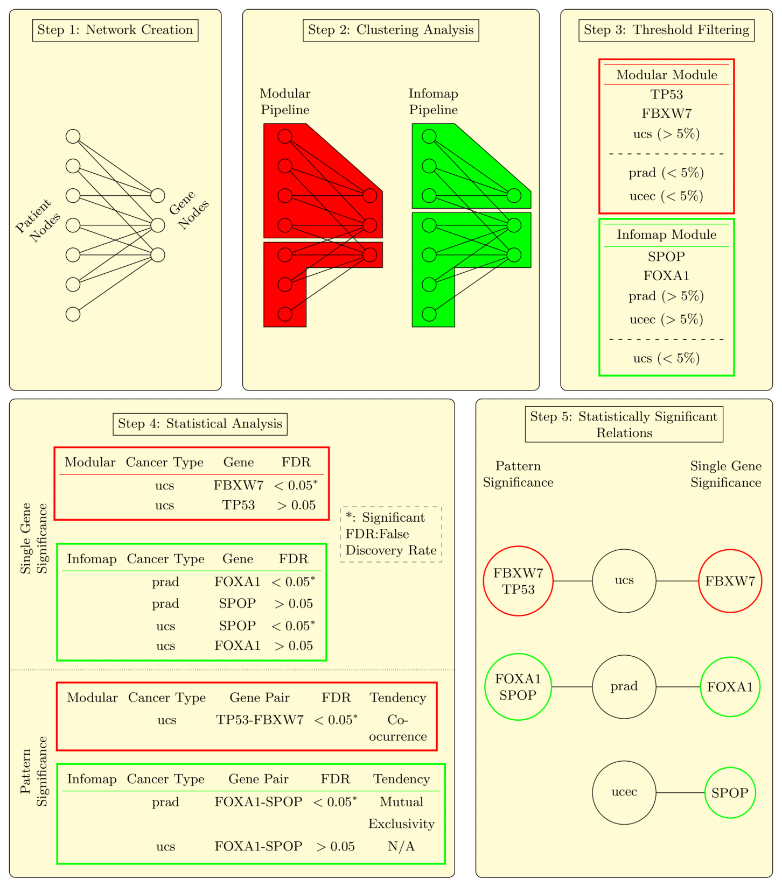
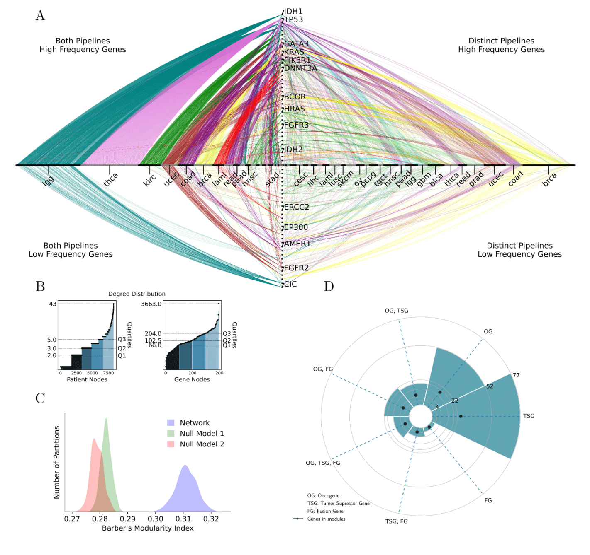
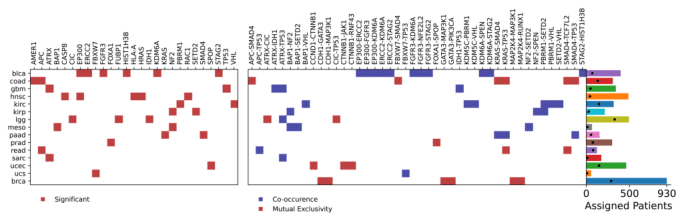

My Research
My research focuses on cancer informatics, aiming to uncover novel patterns in cancer initiation and progression. This work involves rigorous data curation over large datasets to exclude non-cancerous noise, as well as the development of machine learning algorithms and network graphs to extract statistically significant patterns.
Research Overview
My latest work was focused in the identification of tissue-specific mutational patterns associated with cancer. This is a challenging task due to the low frequency of certain mutations and the high variability among tumors within the same cancer type. To address the inter-tumoral heterogeneity issue, I developed an intra-clustering analysis pipeline which identified 42 previously unreported mutational patterns using state-of-the-art algorithms. Briefly, a Network Graph of $8303$ patients and $198$ genes was constructed using single-point-mutation data from The Cancer Genome Atlas (TCGA). Patient-gene groups were retrieved with the parallel use of two separate methodologies based on the: (a) Barber’s modularity index, and (b) network dynamics. An intra-clustering analysis was employed to explore the patterns within smaller patient subgroups in two phases: i) to determine the significant presence of a gene with a cancer type using the Fisher’s exact test and ii) to determine gene-to-gene patterns using multiple correspondence analysis and DISCOVER. The results are followed by a Benjamini-Hochberg false discovery rate of $5\%$.
The proposed intra-clustering analysis extracted statistically significant relationships within clusters, uncovering putative clinically relevant connections and disentangling mutational heterogeneity.

A schematic overview of the proposed method for the constructed network using a subset of genes and patients of the Infomap pipeline and the MODULAR pipeline:
- Step 1: The network was created from somatic-point-mutation data and is, by default, bipartite.
- Step 2: We use the two clustering analysis pipelines to obtain two different partitions of the network in clusters.
- Step 3: We filtered each cluster with respect to the amount of patients per cancer type, in order to provide robust results per cancer type.
- Step 4: We performed Fisher’s exact test on each cluster for every cancer-gene combination in the cluster and a combination of multiple correspondence analysis and DISCOVER for every gene-to-gene pattern for every cancer type within the cluster to obtain the p-values. The Benjamini-Hochberg false discovery rate method was employed on each cluster to obtain the adjusted p-values. A relation was considered significant if the adjusted p-value was lower than $0.05$. The cases of the single gene significance and pattern significance were treated separately.
- Step 5: Visualization of the significant relations per cancer type.

Network and Node Analysis
- (A) A view of the network in unified clusters (See Supplementary Information for details on the unified clusters). The x-axis contains only patients that are clustered from any pipeline. If a patient is clustered from both pipelines, the corresponding node is presented at the left side of the axis. On the other hand if a patient is clustered from a single pipeline, the node is presented at the right side of the axis. The y-axis contains the genes that are assigned in modules. If a gene is mutated in a percentage higher than $30\%$, in any of the obtained modules, then the corresponding gene node is presented at the upper side of the axis. On the other hand, if the gene is mutated in a percentage lower than $30\%$, the gene node is presented in the lower side of the axis.
- (B) The degree distribution of the patient nodes (left) and of the gene nodes (right). The different colors of the shaded area are defined by the known quartiles. Nodes of the same shade have a degree lower than the degree that corresponds to the $25\%$, $50\%$, $75\%$ and $100\%$ of the degrees. For example, the darkest blue area corresponds to the patients with a degree of less or equal than $2$ (=$Q_1$).
- (C) The modular structure of the network is compared to the two null models provided by the MODULAR software. The dissociation of the modularities of the null models and the network is apparent.
- (D) The cancer-gene classification of the $198$ genes of the dataset presented as a polar barplot. The black dot corresponds to the number of genes of the corresponding classification assigned in clusters. The gene classification is described at the legend below the plot.

Results
This figure summarizes the significant relations and the number of clustered patients per cancer type. A significant relation is referred to as significant if the adjusted p-value from the Benjamini-Hochberg false discovery rate is lower than $0.05$. At the left heatmap, the significant cancer-gene relations are marked in red. At the center, the significant gene-to-gene relations are marked in a color. If the color is red, the significant pattern is a pattern of mutual exclusivity, and if the color is blue, the significant pattern is a pattern of co-occurrence. At the right, the length of each bar of the bar plot is equivalent to the number of patients of the curated dataset of the cancer type corresponding to this bar. Furthermore, the black dot indicates the number of patients being clustered in the corresponding cancer type.
